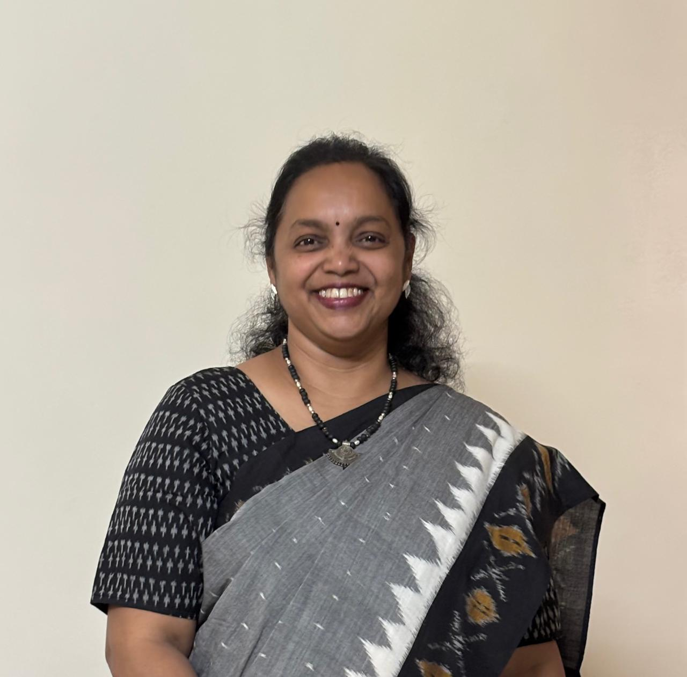

CBSE and SSC/HSC Sanskrit tuition for std. 5th to 12th, a dedicated 10th CBSE test series, and a grammar-focused Vyakaran Varg — guided by Aditi Deshpande, M.A., B.Ed.
Generations of students have learned Sanskrit through patient, structured teaching.

Aditi Deshpande is a passionate and experienced Sanskrit educator with 25 years of dedicated teaching experience. Holding a Master's degree in Sanskrit and a Bachelor of Education (B.Ed.), she has devoted her career to making Sanskrit simple, engaging, and enjoyable for students.
Over the years, she has successfully taught 2,000+ students, helping them develop a strong conceptual understanding of the language and achieve excellent academic results. Her clear explanations, systematic teaching methodology, and personalized guidance have earned the trust of generations of students and parents.
Known for creating a supportive and disciplined learning environment, she focuses on building confidence, strengthening fundamentals, and preparing students to excel in school examinations. Many students join through recommendations from former students and parents — a reflection of the trust built over 25 years.
With a teaching philosophy centered on patience, consistency, and conceptual clarity, she continues to inspire students to appreciate the beauty of Sanskrit while achieving their academic goals.
Structured batches for CBSE and SSC/HSC students, online or offline, std. 5th through 12th.
A dedicated grammar batch open to students of any standard from 5th to 12th, focused entirely on strengthening Sanskrit grammar fundamentals — sandhi, samas, vibhakti, and dhatu roop — for lasting conceptual clarity.
Two and a half decades of teaching across boards and standards, with a method refined over generations of students.
A large alumni base of students and parents, many of whom continue to recommend the classes to others.
Dedicated batches for both CBSE and SSC/HSC, taught according to each board's specific syllabus.
Join from home or attend in person at Karve Nagar, Pune — whichever suits your schedule.
Strong fundamentals through the Vyakaran Varg, building a base that supports every other standard.
The 10th CBSE Test Series gives structured, exam-pattern practice ahead of board exams.
We teach both CBSE (std. 5th to 10th) and SSC/HSC (std. 8th to 12th), each following its respective board syllabus.
Both options are available. You can attend in person at our Karve Nagar, Pune location, or join online from home.
It's a dedicated grammar batch open to students of any standard from 5th to 12th, focused purely on building strong Sanskrit grammar fundamentals.
No. Classes are structured by standard and start from the basics relevant to that level, so no prior background is required.
Fees vary by standard and batch type. Please WhatsApp or call us directly for current fee details.
Message us on WhatsApp or call to enquire. We'll guide you through batch timings, fees, and enrollment from there.
Reach out on WhatsApp, call, or email — we're happy to answer any questions.